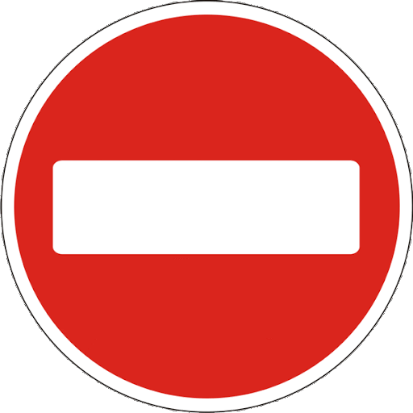
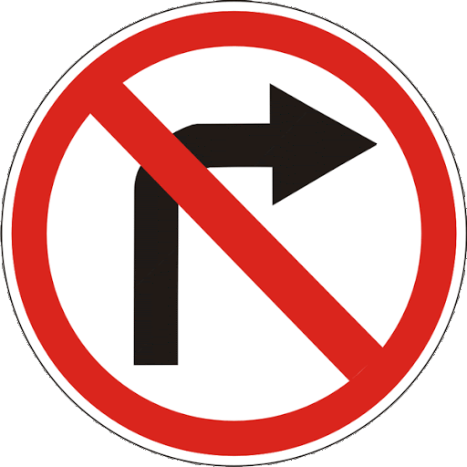
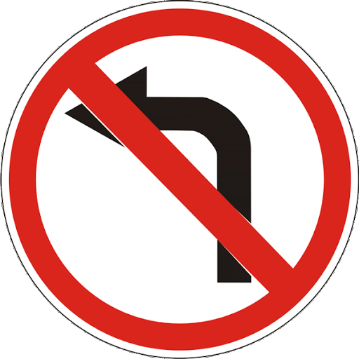

3. Рух транспортних засобів із спеціальними сигналами
3.1. Водії оперативних транспортних засобів, виконуючи невідкладне службове завдання, можуть відступати від вимог розділів 8 (крім сигналів регулювальника), 10-18, 26, 27 та пункту 28.1 цих Правил за умови увімкнення проблискового маячка синього або червоного кольору і спеціального звукового сигналу та забезпечення безпеки дорожнього руху. За відсутності необхідності додаткового привертання уваги учасників дорожнього руху спеціальний звуковий сигнал може бути вимкнений.
3.2. У разі наближення транспортного засобу з увімкненим синім проблисковим маячком та (або) спеціальним звуковим сигналом водії інших транспортних засобів, які можуть створювати йому перешкоду для руху, зобов’язані дати йому дорогу і забезпечити безперешкодний проїзд зазначеного транспортного засобу (і супроводжуваних ним транспортних засобів).
На транспортних засобах, які рухаються в супроводжуваній колоні, повинне бути ввімкнено ближнє світло фар.
Якщо на такому транспортному засобі увімкнено проблискові маячки синього і червоного або лише червоного кольору, водії інших транспортних засобів зобов’язані зупинитися біля правого краю проїзної частини (на правому узбіччі). На дорозі з розділювальною смугою цю вимогу зобов’язані виконати водії транспортних засобів, що рухаються в попутному напрямку.
3.3. Якщо під час супроводження колони транспортних засобів на транспортному засобі, що рухається попереду колони, увімкнено проблискові маячки синього і червоного або лише червоного кольору, колону повинен замикати транспортний засіб з увімкненим зеленим або синім і зеленим проблисковими маячками, після проїзду якого скасовуються обмеження на рух інших транспортних засобів.
3.4. Забороняється здійснювати обгін і випередження транспортних засобів з увімкненими проблисковими маячками синього і червоного або лише червоного кольору та зеленого або синього і зеленого кольору і супроводжуваних ними транспортних засобів (колони), а також рухатися по суміжних смугах із швидкістю колони або займати місце в колоні.
3.5. Наближаючись до нерухомого транспортного засобу з увімкненим проблисковим маячком синього кольору та спеціальним звуковим сигналом (або без увімкненого спеціального звукового сигналу), що стоїть на узбіччі (біля проїзної частини) або на проїзній частині, водій повинен знизити швидкість до 40 км/год та в разі подання регулювальником відповідного сигналу зупинитися. Продовжувати рух можна лише з дозволу регулювальника.
3.6. Увімкнення проблискового маячка оранжевого кольору на транспортних засобах з розпізнавальним знаком “Діти”, на механічних транспортних засобах дорожньо-експлуатаційної служби під час виконання роботи на дорозі, на великогабаритних та великовагових транспортних засобах не дає їм переваги в русі, а служить для привернення уваги та попередження про небезпеку. При цьому водіям транспортних засобів дорожньо-експлуатаційної служби під час виконання роботи на дорозі дозволяється відступати від вимог дорожніх знаків (крім знаків пріоритету та знаків 3.21-3.23), дорожньої розмітки, а також пунктів 11.2, 11.5-11.10, 11.12, 11.13, підпунктів “б”, “в”, “ґ” пункту 26.2 цих Правил за умови забезпечення безпеки дорожнього руху. Водії інших транспортних засобів не повинні перешкоджати їхній роботі.

3.21

3.22

3.23